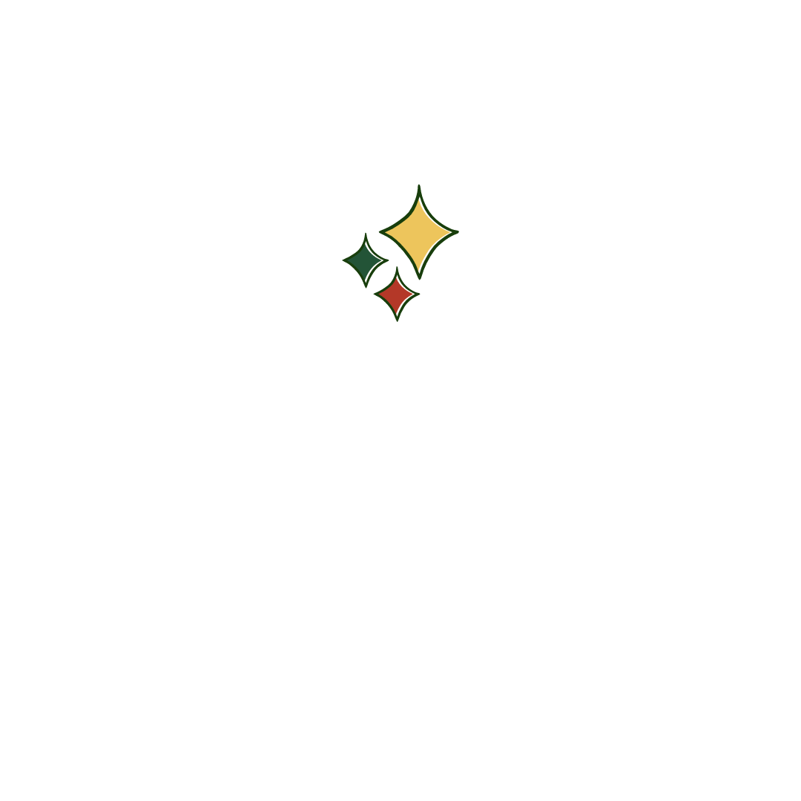

This is an anime from BBDO.
The little boy Jacob in the story is based on the life archetype,
the real Jacob did not start speaking until the age of 4, sensitive to sound and light,
afraid to look directly into the eyes of others,
afraid of change, these are some symptoms of autism.
The BBDO's idea was also a source of access to Jacob and other autism-affected families.
When it comes to autism, finding the right words can be tough.
Finding understanding doesn't have to be.
We can create a kinder, more inclusive world for the millions of people on the autism.